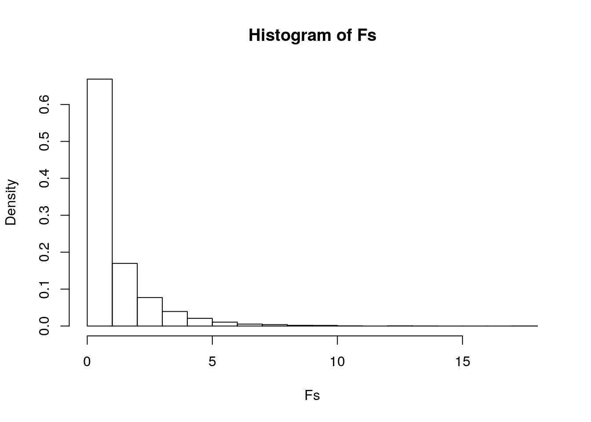
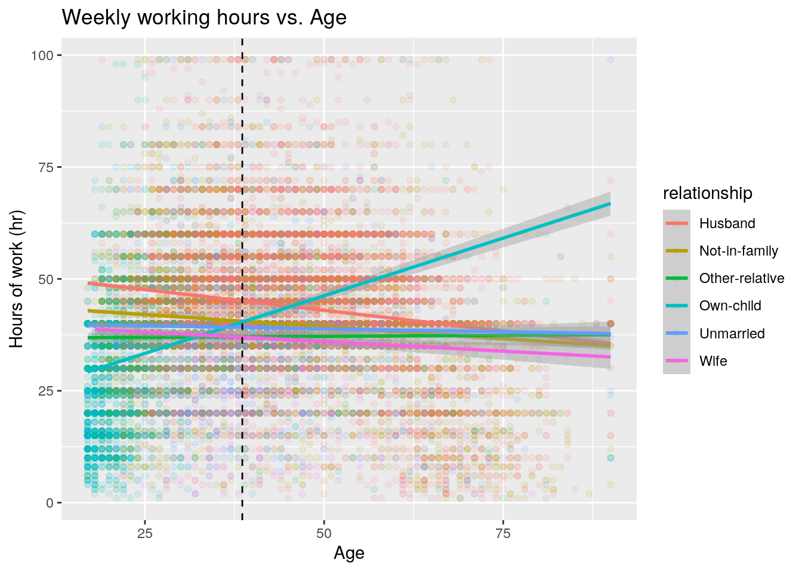
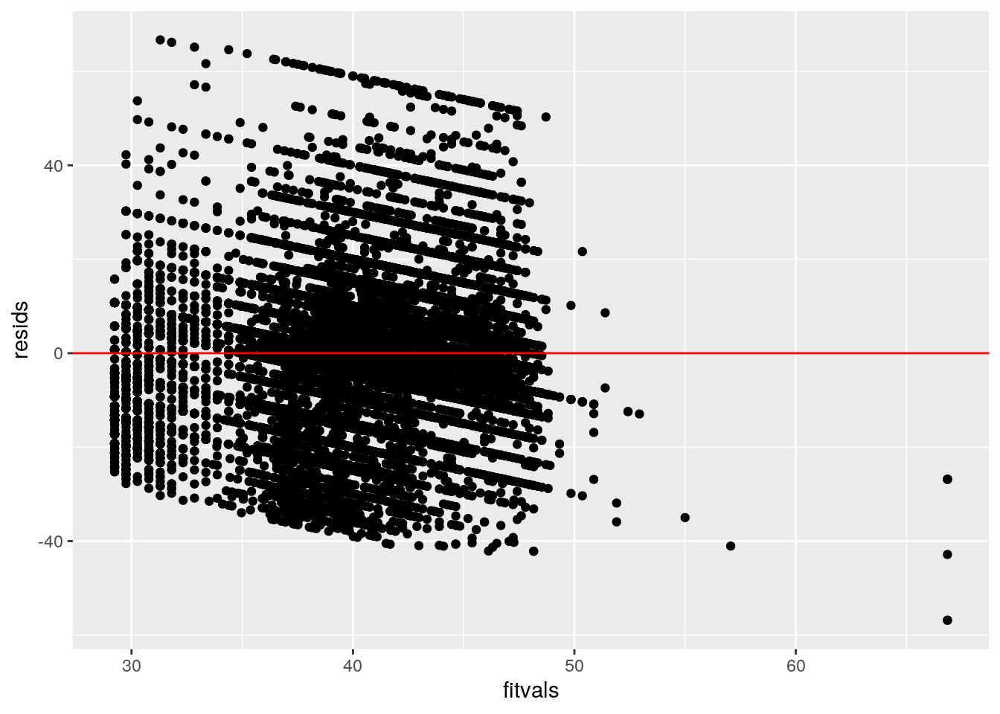
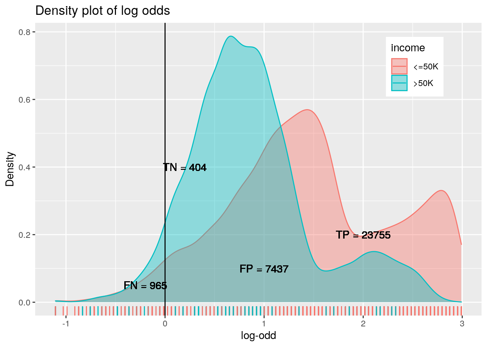
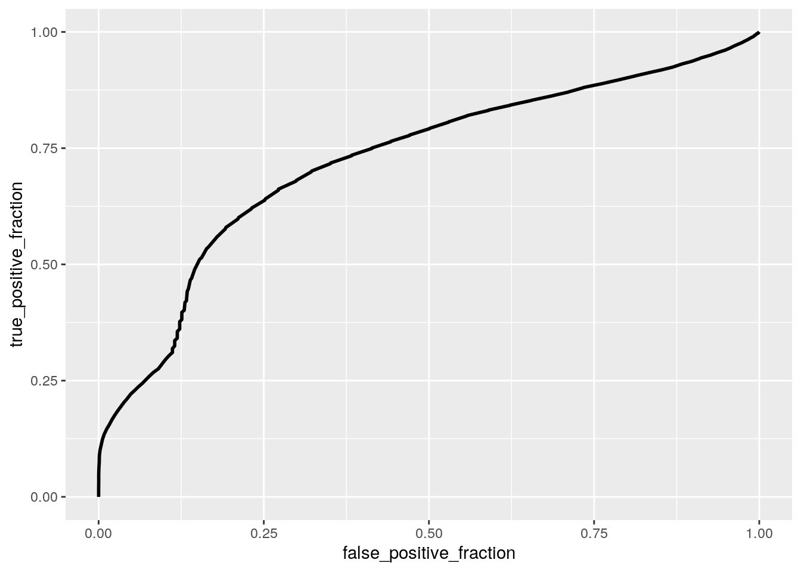

library(dplyr)
library(tidyverse)
library(tidyr)
income_evaluation <- read_csv("income_evaluation.csv",
col_types = cols(fnlwgt = col_skip(), `capital-gain` = col_skip(),
`capital-loss` = col_skip()))
# Rename columns
income_evaluation <- income_evaluation %>% rename(eduNum = "education-num",
hrsPerWeek = "hours-per-week", maritalStatus = "marital-status",
nativeCountry = "native-country")
# Replace ? values to NAs
income <- income_evaluation %>% mutate_all(~ifelse(.x ==
"?", NA, .x))For this project, the dataset ‘income’ was used. The dataset contains total 32,561 observations on 12 variables.
The ‘age’ is participants’ age, the ‘workclass’ is participants’ working status (self employed, private, etc), the ‘education’ is the highest level of education participants have, the ‘eduNum’ is total number of years of education, the ‘maritalStatus’ is participants’ marital status (married, never-married, etc), occupation is type of jobs (sales, professional, tech-support, etc), the relationship is participants’ position in their family (husband, own-child, unmarried, etc), the ‘race’ is participants’ races, the ‘sex’ is their gender, the ‘hrsPerWeek’ is total number of hours they work in a week, the ‘nativeCountry’ is where they originally came from, and the ‘income’ is whether income is higher or lower than the 50K.
The age, eduNum, and hrsPerWeek are the numeric variables, the income is a binary variable, and everything else is categorical variables.
# MANOVA
manova_income <- manova(cbind(eduNum, hrsPerWeek) ~
race, data = income)
summary(manova_income)## Df Pillai approx F num Df den Df Pr(>F)
## race 4 0.014103 57.8 8 65112 < 2.2e-16 ***
## Residuals 32556
## ---
## Signif. codes: 0 '***' 0.001 '**' 0.01 '*' 0.05 '.' 0.1 ' ' 1# Univariate ANOVA
summary.aov(manova_income)## Response eduNum :
## Df Sum Sq Mean Sq F value Pr(>F)
## race 4 2591 647.78 99.048 < 2.2e-16 ***
## Residuals 32556 212920 6.54
## ---
## Signif. codes: 0 '***' 0.001 '**' 0.01 '*' 0.05 '.' 0.1 ' ' 1
##
## Response hrsPerWeek :
## Df Sum Sq Mean Sq F value Pr(>F)
## race 4 14842 3710.5 24.408 < 2.2e-16 ***
## Residuals 32556 4949223 152.0
## ---
## Signif. codes: 0 '***' 0.001 '**' 0.01 '*' 0.05 '.' 0.1 ' ' 1# Post-hoc t-tests
pairwise.t.test(income$eduNum, income$race, p.adj = "none")##
## Pairwise comparisons using t tests with pooled SD
##
## data: income$eduNum and income$race
##
## Amer-Indian-Eskimo Asian-Pac-Islander Black Other
## Asian-Pac-Islander < 2e-16 - - -
## Black 0.252 < 2e-16 - -
## Other 0.027 < 2e-16 6.8e-05 -
## White 1.7e-08 < 2e-16 < 2e-16 < 2e-16
##
## P value adjustment method: nonepairwise.t.test(income$hrsPerWeek, income$race, p.adj = "none")##
## Pairwise comparisons using t tests with pooled SD
##
## data: income$hrsPerWeek and income$race
##
## Amer-Indian-Eskimo Asian-Pac-Islander Black Other
## Asian-Pac-Islander 0.92122 - - -
## Black 0.02663 0.00011 - -
## Other 0.57161 0.43370 0.18045 -
## White 0.36201 0.14912 < 2e-16 0.10489
##
## P value adjustment method: noneA MANOVA test was conducted to see whether number of years of education or working hours per week differ by race.
According to the MANOVA test, we can conclude that there is a significant mean difference in either education years or weekly working hours based on the race, Pillai trace=0.0141, pseudo F(8,65112) = 57.8, p < 0.0001.
Univariate ANOVAs for each dependent variable were conducted as follow-up tests to the MANOVA.
The univariate ANOVAs for eduNum and hrsPerWeek are F(4,32556)=99.048, p < 0.0001 and F(4,32556)=24.408, p < 0.0001, respectively.
Post hoc analysis was performed conducting pairwise comparisons to determine which races differed in education years and working hours per week.
For number of years of education, there were significant difference between all races except Black/Amer-Indian-Eskimo and Other/Amer-Indian-Eskimo. For working hours per week, the only significant difference was shown between White and Black.
The total number of tests conducted is 23: 1 MANOVA, 2 ANOVAs, and 20 t-tests. The bonferroni correction is α=.05/23 = 0.00217.
# Randomization test
summary(aov(hrsPerWeek ~ sex, data = income))## Df Sum Sq Mean Sq F value Pr(>F)
## sex 1 261024 261024 1807 <2e-16 ***
## Residuals 32559 4703041 144
## ---
## Signif. codes: 0 '***' 0.001 '**' 0.01 '*' 0.05 '.' 0.1 ' ' 1# observed F-statistic
obs_F <- 1807
Fs <- replicate(5000, {
new <- income %>% mutate(hrsPerWeek = sample(hrsPerWeek)) #scramble the data
# compute new F statistic on scrambled data
SSW <- new %>% group_by(sex) %>% summarize(SSW = sum((hrsPerWeek -
mean(hrsPerWeek))^2)) %>% summarize(sum(SSW)) %>%
pull
SSB <- new %>% mutate(mean = mean(hrsPerWeek)) %>%
group_by(sex) %>% mutate(groupmean = mean(hrsPerWeek)) %>%
summarize(SSB = sum((mean - groupmean)^2)) %>%
summarize(sum(SSB)) %>% pull
(SSB/1)/(SSW/32559)
})
# plot null distribution and observed F statistic
hist(Fs, prob = T)
abline(v = obs_F, col = "red", add = T)
# p-value
mean(Fs > obs_F)## [1] 0The null hypothesis is that there is no significant difference in hrsPerWeek between gender, and the althernative hypothesis is that there is a significant difference in hrsPerWeek between male and female.
The p-value is approximately 0, which indicates that we can reject the null hypothesis.
library(lmtest)
library(sandwich)
# Centering mean for numeric variable
income$hrs_centered <- income$age - mean(income$age,
na.rm = T)
# Linear regression
fit <- lm(hrsPerWeek ~ relationship * hrs_centered,
data = income)
summary(fit)##
## Call:
## lm(formula = hrsPerWeek ~ relationship * hrs_centered, data = income)
##
## Residuals:
## Min 1Q Median 3Q Max
## -56.848 -5.197 -0.525 5.096 66.703
##
## Coefficients:
## Estimate Std. Error t value Pr(>|t|)
## (Intercept) 45.089572 0.109308 412.502 < 2e-16
## relationshipNot-in-family -4.519204 0.167053 -27.053 < 2e-16
## relationshipOther-relative -8.035855 0.408392 -19.677 < 2e-16
## relationshipOwn-child -4.733955 0.336438 -14.071 < 2e-16
## relationshipUnmarried -5.941319 0.226351 -26.248 < 2e-16
## relationshipWife -8.119658 0.312284 -26.001 < 2e-16
## hrs_centered -0.185113 0.008335 -22.210 < 2e-16
## relationshipNot-in-family:hrs_centered 0.077732 0.012348 6.295 3.11e-10
## relationshipOther-relative:hrs_centered 0.193900 0.027261 7.113 1.16e-12
## relationshipOwn-child:hrs_centered 0.700340 0.021598 32.426 < 2e-16
## relationshipUnmarried:hrs_centered 0.158696 0.018841 8.423 < 2e-16
## relationshipWife:hrs_centered 0.099472 0.027207 3.656 0.000256
##
## (Intercept) ***
## relationshipNot-in-family ***
## relationshipOther-relative ***
## relationshipOwn-child ***
## relationshipUnmarried ***
## relationshipWife ***
## hrs_centered ***
## relationshipNot-in-family:hrs_centered ***
## relationshipOther-relative:hrs_centered ***
## relationshipOwn-child:hrs_centered ***
## relationshipUnmarried:hrs_centered ***
## relationshipWife:hrs_centered ***
## ---
## Signif. codes: 0 '***' 0.001 '**' 0.01 '*' 0.05 '.' 0.1 ' ' 1
##
## Residual standard error: 11.51 on 32549 degrees of freedom
## Multiple R-squared: 0.1312, Adjusted R-squared: 0.1309
## F-statistic: 447 on 11 and 32549 DF, p-value: < 2.2e-16# Plot
income %>% select(age, relationship, hrsPerWeek) %>%
na.omit %>% ggplot(aes(age, hrsPerWeek, color = relationship)) +
geom_point(alpha = 0.1) + geom_smooth(method = "lm") +
geom_vline(xintercept = mean(income$age, na.rm = T),
lty = 2) + labs(x = "Age", y = "Hours of work (hr)",
title = "Weekly working hours vs. Age")
# Check assumptions of linearity, normality, and
# homoskedasticity
resids <- fit$residuals
fitvals <- fit$fitted.values
# Linearity
ggplot() + geom_point(aes(fitvals, resids)) + geom_hline(yintercept = 0,
color = "red")
# Normality
ks.test(resids, "pnorm", mean = 0, sd(resids))##
## One-sample Kolmogorov-Smirnov test
##
## data: resids
## D = 0.098523, p-value < 2.2e-16
## alternative hypothesis: two-sided# Homoskedasticity
bptest(fit)##
## studentized Breusch-Pagan test
##
## data: fit
## BP = 311.49, df = 11, p-value < 2.2e-16# Robust standard errors
coeftest(fit, vcov = vcovHC(fit))##
## t test of coefficients:
##
## Estimate Std. Error t value
## (Intercept) 45.0895718 0.1027618 438.7777
## relationshipNot-in-family -4.5192045 0.1646123 -27.4536
## relationshipOther-relative -8.0358548 0.4320193 -18.6007
## relationshipOwn-child -4.7339553 0.4687856 -10.0983
## relationshipUnmarried -5.9413194 0.2014044 -29.4994
## relationshipWife -8.1196584 0.3106750 -26.1355
## hrs_centered -0.1851132 0.0098051 -18.8793
## relationshipNot-in-family:hrs_centered 0.0777320 0.0151830 5.1197
## relationshipOther-relative:hrs_centered 0.1938997 0.0340772 5.6900
## relationshipOwn-child:hrs_centered 0.7003401 0.0315796 22.1770
## relationshipUnmarried:hrs_centered 0.1586961 0.0220245 7.2054
## relationshipWife:hrs_centered 0.0994722 0.0305998 3.2508
## Pr(>|t|)
## (Intercept) < 2.2e-16 ***
## relationshipNot-in-family < 2.2e-16 ***
## relationshipOther-relative < 2.2e-16 ***
## relationshipOwn-child < 2.2e-16 ***
## relationshipUnmarried < 2.2e-16 ***
## relationshipWife < 2.2e-16 ***
## hrs_centered < 2.2e-16 ***
## relationshipNot-in-family:hrs_centered 3.078e-07 ***
## relationshipOther-relative:hrs_centered 1.281e-08 ***
## relationshipOwn-child:hrs_centered < 2.2e-16 ***
## relationshipUnmarried:hrs_centered 5.911e-13 ***
## relationshipWife:hrs_centered 0.001152 **
## ---
## Signif. codes: 0 '***' 0.001 '**' 0.01 '*' 0.05 '.' 0.1 ' ' 1# Uncorrected SEs
summary(fit)$coef[, 1:2]## Estimate Std. Error
## (Intercept) 45.08957180 0.109307502
## relationshipNot-in-family -4.51920450 0.167052702
## relationshipOther-relative -8.03585484 0.408392252
## relationshipOwn-child -4.73395534 0.336438009
## relationshipUnmarried -5.94131936 0.226351049
## relationshipWife -8.11965838 0.312284231
## hrs_centered -0.18511324 0.008334622
## relationshipNot-in-family:hrs_centered 0.07773204 0.012347529
## relationshipOther-relative:hrs_centered 0.19389967 0.027261187
## relationshipOwn-child:hrs_centered 0.70034012 0.021597859
## relationshipUnmarried:hrs_centered 0.15869614 0.018841453
## relationshipWife:hrs_centered 0.09947222 0.027206751# Corrected/robust SE
coeftest(fit, vcov = vcovHC(fit))[, 1:2]## Estimate Std. Error
## (Intercept) 45.08957180 0.102761759
## relationshipNot-in-family -4.51920450 0.164612263
## relationshipOther-relative -8.03585484 0.432019345
## relationshipOwn-child -4.73395534 0.468785592
## relationshipUnmarried -5.94131936 0.201404426
## relationshipWife -8.11965838 0.310675002
## hrs_centered -0.18511324 0.009805094
## relationshipNot-in-family:hrs_centered 0.07773204 0.015183026
## relationshipOther-relative:hrs_centered 0.19389967 0.034077152
## relationshipOwn-child:hrs_centered 0.70034012 0.031579579
## relationshipUnmarried:hrs_centered 0.15869614 0.022024462
## relationshipWife:hrs_centered 0.09947222 0.030599765The mean/predicted weekly working hours of people with average age is 45.089 hrs.
The hours of working per week has a negative association with the age.
For people with average age, the average weekly working hours for people not in family is 4.519 less than others.
For people with average age, the average weekly working hours for people Other-relative is 8.036 less than others.
For people with average age, the average weekly working hours for people who owned child is 4.734 less than others.
For people with average age, the average weekly working hours for people who unmarried is 5.941 less than others.
For people with average age, the average weekly working hours for wives is 8.119 less than others.
According to the assumptions tests, the data is heteroskedastic and not normal.
Based on the robust standard errors, the average working hours of people in all kinds of relationships are significantly differenct each other (p < 0.05).
Compare to the uncorrected standard errors, they are slightly increased after correction.
# Bootstrapping
samp_distn <- replicate(5000, {
boot_dat <- income[sample(nrow(income), replace = TRUE),
]
fit2 <- lm(hrsPerWeek ~ relationship * hrs_centered,
data = boot_dat)
coef(fit2)
})
## Estimated SEs
samp_distn %>% t %>% as.data.frame %>% summarize_all(sd)## (Intercept) relationshipNot-in-family relationshipOther-relative
## 1 0.1030516 0.1615876 0.4317616
## relationshipOwn-child relationshipUnmarried relationshipWife hrs_centered
## 1 0.4651898 0.2009918 0.3092066 0.009810256
## relationshipNot-in-family:hrs_centered
## 1 0.0153526
## relationshipOther-relative:hrs_centered relationshipOwn-child:hrs_centered
## 1 0.03414529 0.03126874
## relationshipUnmarried:hrs_centered relationshipWife:hrs_centered
## 1 0.02210539 0.03039047Compare to the original SEs and robust SEs, the standard errors are much larger after the bootstrapping.
income2 <- income %>% select("sex", "age", "income") %>%
na.omit()
# Create binary column
income2 <- income2 %>% mutate(income_b = ifelse(income ==
"<=50K", 1, 0))
# Predict income from gender and race
fit3 <- glm(income_b ~ sex + age, data = income2, family = "binomial")
coeftest(fit3)##
## z test of coefficients:
##
## Estimate Std. Error z value Pr(>|z|)
## (Intercept) 3.6549842 0.0533277 68.538 < 2.2e-16 ***
## sexMale -1.2484117 0.0349247 -35.746 < 2.2e-16 ***
## age -0.0390293 0.0010022 -38.942 < 2.2e-16 ***
## ---
## Signif. codes: 0 '***' 0.001 '**' 0.01 '*' 0.05 '.' 0.1 ' ' 1# Logistic regression matrix
income3 <- income2 %>% mutate(prob = predict(fit3,
type = "response"), prediction = ifelse(prob >
0.5, 1, 0))
classify <- income3 %>% transmute(prob, prediction,
truth = income2$income_b)
table(prediction = classify$prediction, truth = classify$truth) %>%
addmargins()## truth
## prediction 0 1 Sum
## 0 404 965 1369
## 1 7437 23755 31192
## Sum 7841 24720 32561# Accuracy
(404 + 23755)/32561## [1] 0.7419612# Sensitivity (TPR)
23755/24720## [1] 0.9609628# Specificity (TNR)
404/7841## [1] 0.05152404# Precision (PPV)
23755/31192## [1] 0.7615735# Density plot of the log-odds
income3$logit <- predict(fit3, type = "link")
income3 %>% ggplot() + geom_density(aes(logit, color = income,
fill = income), alpha = 0.4) + theme(legend.position = c(0.85,
0.85)) + geom_vline(xintercept = 0) + xlab("logit (log-odds)") +
geom_rug(aes(logit, color = income)) + geom_text(x = 0.2,
y = 0.4, label = "TN = 404") + geom_text(x = -0.2,
y = 0.05, label = "FN = 965") + geom_text(x = 1,
y = 0.1, label = "FP = 7437") + geom_text(x = 2,
y = 0.2, label = "TP = 23755") + labs(x = "log-odd",
y = "Density", title = "Density plot of log odds")
# ROC curve
library(plotROC)
pr = predict(fit3, type = "response")
rocplot <- ggplot(income2) + geom_roc(aes(d = income_b,
m = pr), n.cuts = 0)
rocplot
# AUC
calc_auc(rocplot)## PANEL group AUC
## 1 1 -1 0.7236795According to the regression, both gender and age have significant effects on the income.
Controlling for age, the income between male and female are significantly different.
Controlling for gender, the income is significantly different by age.
Accuracy, sensitivity (TPR), specificity (TNR), and precision (PPV) are 0.742, 0.961, 0.052, and 0.762, respectively.
According to the calculated AUC, the malignant (income <= 50K) will have higher scores than benign (income >50K) for 72.4% of time.
Probability that a randomly selected person with income less than 50K has a higher predicted probability than a randomly selected person with income higher than 50K.
# Logistic regression to predict income based on
# all other variables
income4 <- income %>% select(-maritalStatus, -occupation,
-nativeCountry) %>% na.omit()
income4 <- income4 %>% mutate(income_b = ifelse(income ==
"<=50K", 1, 0))
fit4 <- glm(income_b ~ age + workclass + education +
eduNum + relationship + race + sex + hrsPerWeek,
data = income4, family = "binomial")
prob2 <- predict(fit4, type = "response")
# In-sample classification diagnostics
class_diag(prob2, income4$income_b)## acc sens spec ppv auc
## 1 0.8243775 0.9229469 0.5270588 0.8547863 0.8760962The accuracy, sensitivity, specificity, precision, and AUC for the in-sample classification are 0.824, 0.923, 0.527, 0.855, and 0.876, respectively.
According to the AUC, there are 87.6% chance that randomly selected person with income less than 50K (malignant).
# 10-fold CV
set.seed(1234)
k = 10
data <- income4[sample(nrow(income4)), ]
folds <- cut(seq(1:nrow(income4)), breaks = k, labels = F)
diags <- NULL
for (i in 1:k) {
## Create training and test sets
train <- data[folds != i, ]
test <- data[folds == i, ]
truth <- test$income_b
## Train model on training set
fit <- glm(income_b ~ age + workclass + education +
eduNum + relationship + race + sex + hrsPerWeek,
data = train, family = "binomial")
probs <- predict(fit, newdata = test, type = "response")
## Test model on test set (save all k results)
diags <- rbind(diags, class_diag(probs, truth))
}
summarize_all(diags, mean)## acc sens spec ppv auc
## 1 0.8237268 0.9224707 0.5259725 0.8544215 0.8752349The accuracy, sensitivity, specificity, precision, and AUC for the 10-fold cross validation are 0.824, 0.922, 0.526, 0.854, and 0.875, respectively.
AUC for 10-fold CV (0.875) is approximately same as the original AUC value.
# LASSO
library(glmnet)
y <- as.matrix(income4$income_b)
x <- model.matrix(income_b ~ age + workclass + education +
eduNum + relationship + race + sex + hrsPerWeek,
data = income4)[, -1]
cv <- cv.glmnet(x, y)
cv <- cv.glmnet(x, y, family = "binomial")
lasso <- glmnet(x, y, family = "binomial", lambda = cv$lambda.1se)
coef(lasso)## 36 x 1 sparse Matrix of class "dgCMatrix"
## s0
## (Intercept) 7.02467091
## age -0.02941231
## workclassLocal-gov .
## workclassNever-worked .
## workclassPrivate .
## workclassSelf-emp-inc -0.34556269
## workclassSelf-emp-not-inc 0.34775797
## workclassState-gov 0.03855394
## workclassWithout-pay .
## education11th .
## education12th .
## education1st-4th .
## education5th-6th .
## education7th-8th .
## education9th .
## educationAssoc-acdm 0.16331663
## educationAssoc-voc .
## educationBachelors .
## educationDoctorate .
## educationHS-grad 0.03607100
## educationMasters -0.03280631
## educationPreschool .
## educationProf-school -0.19126863
## educationSome-college .
## eduNum -0.33642538
## relationshipNot-in-family 1.58188829
## relationshipOther-relative 1.44027629
## relationshipOwn-child 2.34539055
## relationshipUnmarried 1.55936014
## relationshipWife -1.06008897
## raceAsian-Pac-Islander .
## raceBlack .
## raceOther .
## raceWhite -0.14334721
## sexMale -0.68176568
## hrsPerWeek -0.02713623According to the LASSO, age, gender, race (White), some relationships (not-in-family, other-relative, own-child, unmarried, wife), some education (HS-grad, master, prof-school, assoc-acdm), hours of working, and some work classes (Self-emp-inc, Self-emp-not-inc) are most predictive of income.
# 10-folds CV using relationship, sex, hrsPerWeek,
# race
set.seed(1234)
k = 10
income5 <- income4 %>% mutate(m = ifelse(income4$sex ==
"Male", 1, 0), white = ifelse(income4$race == "White",
1, 0))
data <- income5[sample(nrow(income5)), ]
folds <- cut(seq(1:nrow(income5)), breaks = k, labels = F)
diags <- NULL
for (i in 1:k) {
## Create training and test sets
train <- data[folds != i, ]
test <- data[folds == i, ]
truth <- test$income_b
## Train model on training set
fit <- glm(income_b ~ age + relationship + white +
m + hrsPerWeek, data = train, family = "binomial")
probs <- predict(fit, newdata = test, type = "response")
## Test model on test set (save all k results)
diags <- rbind(diags, class_diag(probs, truth))
}
summarize_all(diags, mean)## acc sens spec ppv auc
## 1 0.7670624 0.9079201 0.3424558 0.806337 0.822579610-fold CV was conducted using age, relationship, white (race), working hours in a week, and male (gender). Compare to the AUC values for the original and the 10-fold CV using all variables, the AUC value for the 10-fold CV using selected variables is slightly less (0.823).